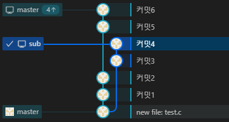
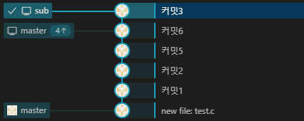
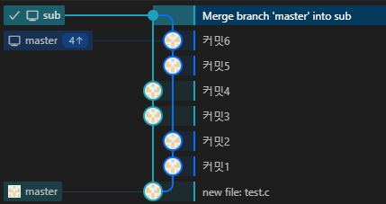

같이보기
기본 원칙
- 무조건 git 프로젝트를 열면
패치,풀
Pull먼저 하고Push
Rebase
말 그대로 브랜치에 베이스를 다시 잡아 병합해주는
타겟 브랜치에 각 커밋 별로 병합 오류를 해결해야 되므로 다룰때 주의 해야함
-
Before

-
Rebase

설명
sub에 커밋을 해당Rebase지점인커밋6이후에 커밋이 오도록 수정한다
즉 원래는new file: test.c커밋에서 분기가 나뉜걸커밋6에서 나뉜 분기로 바꾸는
-
master에 있는 커밋 로그를 그대로 복사 -
내 브랜치에서 생성된 커밋을 제일 위로 끌어 올린다
-
sub브랜치에서는커밋3,커밋4를 추가했는데 왜커밋3만 남을까?커밋3과커밋4에서 건드린 파일이 똑같아서커밋3에서 충돌 해결한 내용을커밋4에도 똑같이 적용 시켰다- 그래서
커밋4와커밋3의 변경사항이 동일해지게 된다. 그래서 먼저 해결한커밋3만 커밋로그로 남게됬다 - 만일
커밋3충돌과커밋4충돌을 다른 변경사항으로 적용하면커밋3이후 커밋에커밋4가 기록된다. 즉 마지막 커밋이커밋4가 된다
-
같은 상황에서 merge는 이지랄이 난다

Rebase 되돌리기
- Rebase를 사용하면 커밋 로그가 왜곡 되기때문에 커밋 로그를 보며 되돌아 가는건 불가능 하다
- 대신
git reflog [브랜치]명령을 사용하여 작업로그를 보며 reset 해야 한다93084be (HEAD -> master) master@{0}: rebase (finish): refs/heads/master ...생략 072d4ac master@{1}: commit: 커밋6 - 해당 로그에서
rebase뭐시기 이전 로그 인072d4ac로 리셋하면 된다git reset --hard 072d4ac
실전 사용시 주의사항
- 타겟 브랜치에 각 커밋 별로 병합 오류를 해결해야 되는게 많이 리스크
- Rebase 이후 push 할때는
git push -f하여 강제로 해야한다- 이게
원격과로컬의 커밋 로그가 달라 서로 충돌이 나버려서pull을 시도하는 순간 병합 커밋이 생겨 버린다 - 그래서 로컬 변경사항이 어차피 무조건으로 원하는 방향인거니 강제로 push 하는것이다
- 그러나
push -f의 고질적 문제인데 누군가 rebase 진행 이전에 커밋을 가지고 있는 상태인 경우git reset --hard 원격저장소/브랜치로 원격 브랜치로reset시켜야 한다 - 또한, 만약 그 사이 누군가가 해당 브랜치에 커밋했을경우 그 커밋은 씹히는 문제가 있으니 이때는 rebase 취소하고 pull 받은 후 다시하자
- 그러나
- 그러니
master브랜치나 다른사람랑 같이쓰는 브랜치에서는 되도록 쓰지말고 나만 쓰는 브랜치에서만 쓰는게 맞는듯 하다
- 이게
Rebase 사용할 때
sub브랜치에서master브랜치 변경사항 병합할 때는Rebasemaster에서Rebase병합된sub브랜치를 병합할때는Merge
Squash Marge와 함께 사용 권장
sub브랜치에서master브랜치를 Rebase 하기전master을Squash Merge으로 병합 후Rebase하기- 이러고
Rebase시 발생하는 병합오류는 모두sub브랜치 껄로 변경사항 저장하면 모든 문제 해결이다 - 일반 merge로 하면 병합커밋 이전에 병합도 처리해야 하니 좀 많이 복잡해짐
sub 브랜치에서 수정한 파일이 master에는 삭제됬을때
- 일단 병합 하라고 뜨는데 이런 파일은 보통 수정이 안된다
- cli로 작업할때도 충돌 났다고 뜨지만 막상 파일을 열어보면 별다른 충돌 해더가 없다
- 이때 그냥 그걸 스테이징 하고
변경사항 유지클릭하면 됨- cli에서는 그냥
git rebase --skip
- cli에서는 그냥
3-way merge
- 이게 일반적으로 부르는 병합
fast-forward
main브랜치는 가만히 있는데sub브랜치에만 커밋이 있는경우- 일반
merge처럼 커밋하나 만들어서 병합하는게 아니라Rebase됨 git merge --no-ff로 일반 병합으로 하게 할 수도 있음
squash merge
- 커밋은 병합하지 말고 변경사항만 가져온다
- 그러고 새로 수정하여 커밋하는 방식
- 그렇기에 git에서는 이 브랜치가 병합되었다는 사실이 남지 않는다
그냥 일반 커밋으로 올라 오게되니까
브랜치 간 파일 구조 동일하게 하기
문제상황
- 예를들어
main에서a파일만 건드린 상태고sub에서는a,b파일을 건드린 상태- 이 상황에서
sub가main을 병합 한다면 충돌이 나지 않는b파일은 문제 없이 커밋 됨 - 근데
b파일은 쓸모 없기 때문에b파일은 커밋하면 안되는 상황이라main브랜치와 파일 상태를 동일하게 맞출 필요가 있는거 - reset 이나 rebase 로 처리한다면 커밋 로그가 달라지기에 나중에 문제가 생기기 때문
- 이 상황에서
해결
sub브랜치의 파일 구조를main과 동일 하게# main브랜치와 병합 # 모든 충돌을 sub 브랜치 변경사항으로 유지 시키기 git merge --strategy=ours main # main 브랜치에 파일 구조를 덮어쓰기 git checkout main -- .